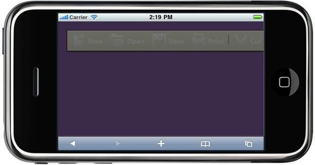

Toolbar supports a rich set of client side methods to control its behavior.
Methods
|
Name |
Parameters |
Return type |
Description |
|
disable |
- |
- |
Disables all the Toolbar items. |
|
enable |
- |
- |
Enables all the Toolbar items. |
|
show |
- |
- |
Show the Toolbar from hidden state |
|
hide |
- |
- |
Hide the Toolbar |
The following steps guide you in using client side methods.
1. In View, invoke the Toolbar helper with Toolbar ID as the first argument.
|
[ASPX] <% = Html.MobSyncfusion().Toolbar("MethodsToolbar") .Items(items => { items.Add().Value("New").Text("New").ImageUrl("~/Content/Toolbar/Images/new.png"); items.Add().Value("Open").Text("Open").ImageUrl("~/Content/Toolbar/Images/open.png"); items.Add().Value("Save").Text("Save").ImageUrl("~/Content/Toolbar/Images/save.png"); items.Add().Value("Print").Text("Print").ImageUrl("~/Content/Toolbar/Images/print.png");
items.Add().IsSeparator(true); items.Add().Value("Cut").Text("Cut").ImageUrl("~/Content/Toolbar/Images/Cut.png");
})%> |
|
[Razor] @{ Html.MobSyncfusion().Toolbar("MethodsToolbar") .Items(items => { items.Add().Value("New").Text("New").ImageUrl("~/Content/Toolbar/Images/new.png"); items.Add().Value("Open").Text("Open").ImageUrl("~/Content/Toolbar/Images/open.png"); items.Add().Value("Save").Text("Save").ImageUrl("~/Content/Toolbar/Images/save.png"); items.Add().Value("Print").Text("Print").ImageUrl("~/Content/Toolbar/Images/print.png");
items.Add().IsSeparator(true); items.Add().Value("Cut").Text("Cut").ImageUrl("~/Content/Toolbar/Images/Cut.png");
}) .Render();} |
2. In Javascript, use the methods to enable and disable an item as follows.
|
[Javascript] <scripttype="text/javascript"> function disableToolbar() { //Code to disable the Toolbar $("#MethodsToolbar").sfToolbar("disable"); }
function enableToolbar() { //Code to enable the Toolbar $("#MethodsToolbar").sfToolbar("enable"); }
function hideToolbar() { //Code to hide the Toolbar $("#MethodsToolbar").sfToolbar("hide"); }
function showToolbar() { //Code to show the Toolbar $("#MethodsToolbar").sfToolbar("show"); } </script>
|
3. Build and run the application.
The output when the Toolbar is disabled is shown in the following screenshots.

Figure 175: Toolbar with disabled state